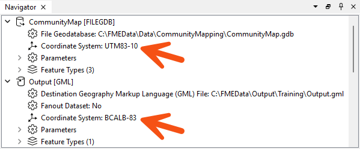
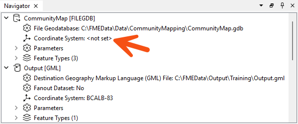
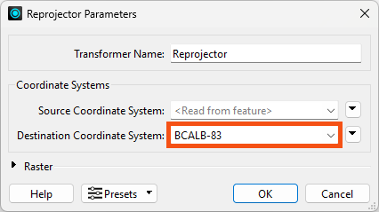

Learning Objectives
After completing this lesson, you’ll be able to:
- Understand the process of reprojecting spatial data.
- Explain how to set coordinate systems using FME.
- Explain how to reproject data using FME.
Reprojecting Spatial Data
Thanks to the wonderful world of coordinate systems, spatial data can come in all shapes and sizes. While having more options gives you the flexibility to do what you want, it also means that everyone else has more options to do what they want. And that can make things tricky.
When sharing or integrating spatial datasets, you’ll inevitably need to perform data transformation tasks that translate all the data you’re working with to use a standard coordinate system. This is what’s called “reprojecting your data.”
Performing reprojections is one of the most common manipulations required when dealing with spatial data. While there are various ways to perform a reprojection, one of the easiest methods is using software that supports this function.
Data integration software like FME allows you to perform reprojections alongside other transformation tasks. No matter your situation when using your data, FME covers all the major reprojection tasks.
You can use FME to:
- Reproject your data to any of the 5,600 natively supported coordinate systems
- Reproject your data to a custom coordinate system you’ve defined
- Apply a projection to spatial data that doesn’t have a defined coordinate system
- Integrate multiple datasets with various coordinate systems into a single output using one coordinate system
- Migrate data from an outdated coordinate system to a newer, accepted standard
Set Coordinate Systems in FME
You can assign a coordinate system to each reader and writer within FME. That coordinate system is set in the Navigator window of Workbench or the Generate Workspace dialog.
Like the source schema, the reader coordinate system is "what we have," and the writer coordinate system is "what we want." Here, we have defined the source coordinate system as UTM83-10 and the destination as BCALB-83:

FME tags each feature the reader processes with the coordinate system defined in its parameter.
When a feature arrives at a writer, if tagged with a different coordinate system than defined for that writer, FME automatically reprojects the data so that the output is in the correct location.

Once tagged with a coordinate system, each feature retains this throughout the translation; FME always knows what coordinate system it belongs to.
This is important when carrying out geometric transformations (like calculating area) or reading multiple datasets from different coordinate systems.
Automatic Detection of Coordinate Systems
It's not always necessary to set the coordinate system parameters manually. Some data formats (for example, Esri Shapefile) can store information about the coordinate system in which they are held, and FME will retrieve this information where it can.

Because the reader coordinate system is marked <not set>, FME will try to determine the coordinate system from the source dataset. If it can't, it will tag the feature with a coordinate system of <unknown>.
Several reprojection scenarios may occur depending on the combination of available coordinate system (CS) information. Here, N means "not set," and S means "set":
| Dataset CS |
Reader CS |
Writer CS |
Reprojection |
| N |
S |
S |
Reprojects from Reader CS to Writer CS |
| S |
N |
S |
Reprojects from Dataset CS to Writer CS |
| N |
N |
S |
Error: Cannot reproject without Dataset or Reader CS |
| S |
S |
S |
Reprojects from Reader CS to Writer CS |
| S |
S |
N |
No reprojection unless the format requires it |
If you do not define the coordinate system on the writer, FME will not reproject the data unless the output format requires it. For example, the KML format requires data to be in Latitude/Longitude. The translation will fail if you do not set the reader or writer coordinate system.
Reproject Data in FME
There are two ways to change the coordinate system of your data using FME:
- Setting the coordinate system on the writer
- Using a transformer
If you set your writer to use your desired coordinate system, as explained above, your data will be reprojected just before being written.
If you instead need to reproject data in the middle of a translation, you can use a projection transformer. The most popular is the Reprojector transformer. You can connect your data to the input port of this transformer and select your desired coordinate system.

You might use this transformer if you want to both read and write data using a geographic coordinate system but need to conduct spatial analysis during your translation. You may need to buffer points or calculate an area. As you learned from the last lesson, spatial analysis should only be conducted using projected coordinate systems.
FME has a variety of transformers that help work with coordinate systems.
View them here.
Part of this lesson was adapted from a post on the Safe Software blog.